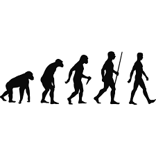

Toggle navigation
LIS 2360 - Web Application Development
Version Control
Local Version Control
Centralized Version Control
Distributed Version Control
Git Basics
Lesson 3 Highlights
Clayton Kuhlmeier

Highlight #1
Version Control
-->
Highlight #2
Local Version Control Systems
Highlight #3
Centralized Version Control
Highlight #4
Distributed Version Control
Highlight #5
Git basics